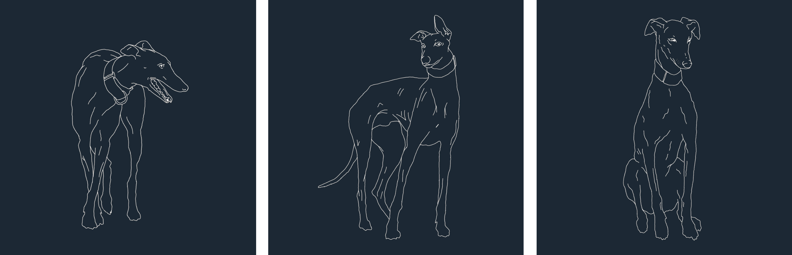
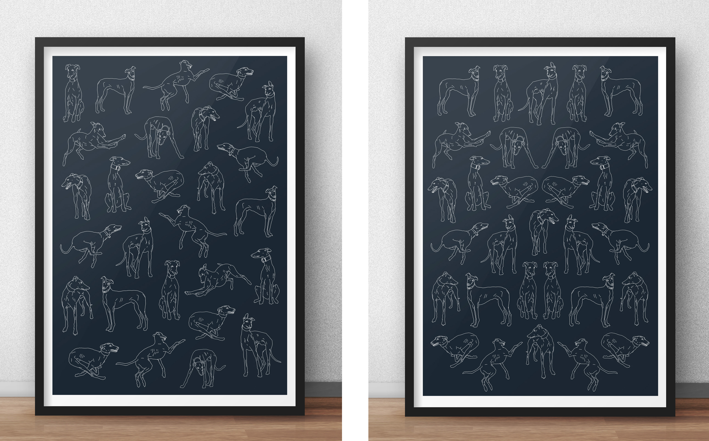

G Project
ILLUSTRATION
This is a project inspired by the documentary film about the Spanish sighthound, YOGALGO.
My intention was to illustrate the shape and moves of one of the most elegant animals and in turn one of the most abused of all, the Spanish greyhound. Between 50.000 and 100.000 galgos are killed or abandoned every year after the hunting season in Spain.




You can see more about YOGALGO project on the link below.